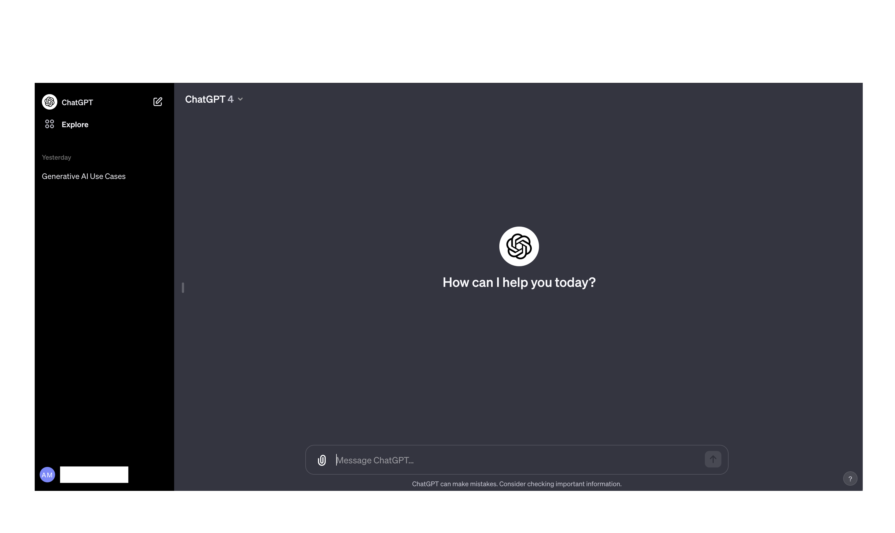

2022 / POCZĄTEK
Okienko
czatu.

Za prostym interfejsem stoi cały łańcuch zależności.
Prelekcja o AI01 / 16
Mapa wystąpienia
Zaplecze AI
01
Energia
02
Chip
03
Centrum danych
04
Model
05
Post-training
06
System
07
Decyzja
Od fizycznej infrastruktury do zdolności działania
Łańcuch zależności02 / 16
Model językowy
Uczenie i używanie modelu
Uczenie
PretrainingTrening wstępny: przewidywanie kolejnego tokenu
Post-trainingKształtowanie zachowania modelu
Używanie
InferenceGotowy model odpowiada na konkretne zapytanie
Zapisane wagi → używanie modelu
Od treningu do odpowiedzi03 / 16
Sprzęt i oprogramowanie
Ekosystem
Nvidii
Przewaga powstaje w kilku warstwach naraz.
01GPUUkłady wykonujące równoległe obliczenia
02CUDAOprogramowanie i gotowe narzędzia
03LudzieKompetencje zespołów i koszt zmiany
Przewaga całego stosu04 / 16
Geopolityka sprzętu
Dostęp do chipów
USAWarunki eksportu
ChinyWarunki importu
LaboratoriaPotrzeby obliczeniowe
Dostęp zależy od decyzji po obu stronach.
Warunki mogą się zmieniać05 / 16
Dwa sposoby korzystania
Usługa
dostawcy
Dostawca uruchamia model i ustala warunki dostępu.
Dwa sposoby korzystania
Dostępne
wagi
Wybieramy operatora, miejsce i wersję modelu.
Potrzebujemy sprzętu, kompetencji i odpowiedniej licencji.
Warunki dostępu do modelu06 / 16
Możliwy mechanizm
Jak rośnie alternatywa dla Nvidii
01Modele działające na Ascend
02Więcej użytkowników
03Więcej narzędzi
04Łatwiejsze wdrożenia
Warunek: cena, wydajność i niezawodność muszą być wystarczające.
Mechanizm, nie przesądzony wynik07 / 16
Od modelu do usługi
Model w systemie
01 · WEJŚCIEDokumenty
Dokumenty
i narzędzia
→
02 · SYSTEM
Oprogramowanie sterujące
Model
Uprawnienia
Stan zadania
Kontrola wyników
Stan zadania
Kontrola wyników
→
03 · NADZÓR
Człowiek
Sprawdza i zatwierdza
Model jest częścią systemu08 / 16
Przykład procesu
Badanie firmy przed zakupem
01Umowy
i aneksyMateriał źródłowy
i aneksyMateriał źródłowy
02System
z modelemWyszukuje i porządkuje
z modelemWyszukuje i porządkuje
03Ustalenia
i brakiCzy potrzebna jest zgoda kontrahenta?
i brakiCzy potrzebna jest zgoda kontrahenta?
04PrawnikOcena ryzyka i decyzja
Co się stanie po zmianie właściciela firmy?
Przykład dydaktyczny09 / 16
Warstwa zastosowań
Polskie produkty w pracy
Textobsługa klienta
Nomagicroboty w magazynie
Żabkawsparcie zamówień
Różne procesy, różne technologie10 / 16
Warstwa modeli
Modele pod własną kontrolą
Polska
PLLuM
Bielik
Bielik
Europa
Mistral
Przydatność w naszych zadaniachMożliwość utrzymania
Kontrolę oceniamy dla konkretnego wdrożenia.
Model to punkt wyjścia11 / 16
Warstwa infrastruktury
Od sprzętu do dostępnej usługi
PIAST-AIPoznań
GaiaKraków
Sprzęt→Usługa→Użytkownicy
Zespół i finansowanie utrzymują cały proces.
Rozwijane projekty12 / 16
Wykorzystanie AI
Firmy korzystające z AI
UE
20%
Polska
8%
Eurostat, 2025. Około; firmy z badanych branż, co najmniej 10 pracowników. Skala słupków: 0–25%.
Czy pracujemy szybciej, taniej i z mniejszą liczbą błędów?
Wdrożenie i jego efekt13 / 16
Przykład hipotetyczny
System dla analityka
Materiały źródłoweDokumenty i wypowiedzi
Grupowanie i wyszukiwanieSystem wspiera analizę
Ocena analitykaCzłowiek wyciąga wnioski
Kontrolowana infrastruktura i uprawnienia
Hipoteza zastosowania14 / 16
Suwerenność selektywna
Ile kontroli potrzebujemy?
01Zwykłe zadaniaMożliwość wyboru usługi
02Ciągłość działaniaPrzenośność i testy
03Funkcje krytyczneWłasne kompetencje i kontrolowane uruchamianie
Autorska synteza, nie norma prawna15 / 16
Pytanie na koniec
Czy potrafimy
działać dalej,
gdy dostawca
odetnie dostęp?
ENERGIACHIPCENTRUM DANYCHMODELPOST-TRAININGSYSTEMDECYZJA
AI jako zdolność działania16 / 16